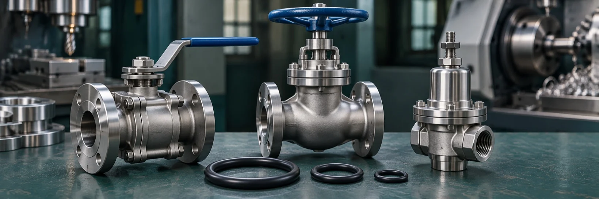

Ví dụ minh họa
Từ yêu cầu khách hàng đến kế hoạch vật tư

- Yêu cầu
- “Giao 200 cụm van kịp cuối tháng được không?”
- Cách cấu hình
- Kết nối email, ERP và kho. Đặt bước duyệt trước khi tạo đơn trên ERP.
- Đầu ra để kiểm tra
- Đề nghị mua phần thiếu để người phụ trách duyệt.
Email đến
Đọc yêu cầu.
Tiếp nhận
Hỏi thêm nếu thiếu.

Đơn hàng
Tạo trên ERP sau khi duyệt.
Sản xuất
Kiểm tra công suất và vật tư.
Tồn kho
Kiểm tra lượng có thể dùng.
Mua hàng
Gửi đề nghị mua để duyệt.
- Gioăng cần dùng
- 400
- Gioăng có sẵn
- 300
- Gioăng cần mua thêm
- 100 Chờ phê duyệt
Kết nối và bước duyệt được thiết lập cho từng triển khai.